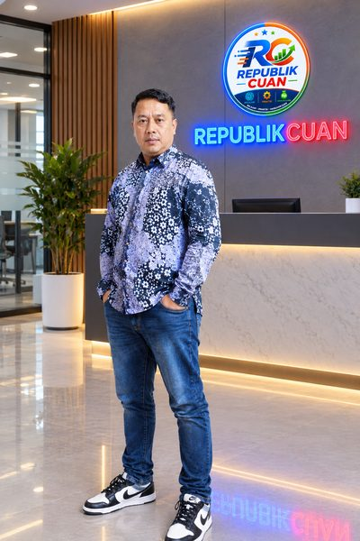

Tentang RepublikCuan
Siapa Kami
RepublikCuan adalah platform edukasi dan informasi di bawah naungan Generasi Rebahan Kreatif, sebuah perusahaan perorangan yang bergerak di bidang edukasi digital dan pengembangan konten.
Kami hadir untuk membantu para pemula, pelaku UMKM, freelancer, dan calon pengusaha dalam memulai serta mengembangkan bisnis di era digital.
Apa yang Kami Sajikan
RepublikCuan menyajikan informasi praktis seputar dunia usaha, peluang bisnis, pemasaran digital, perizinan, serta pemanfaatan teknologi Artificial Intelligence (AI) agar lebih mudah dipahami dan dapat diterapkan.
Setiap artikel kami tulis dengan pendekatan praktis dan aplikatif — bukan sekadar teori yang membingungkan.
USAHA-AI: Asisten AI untuk UMKM
Sebagai bagian dari pengembangan kami, RepublikCuan menghadirkan USAHA-AI, sebuah asisten AI yang dirancang untuk membantu UMKM dan pebisnis pemula mendapatkan ide usaha, membuat konten promosi, menyusun strategi bisnis, dan meningkatkan produktivitas melalui teknologi AI.
Coba USAHA-AI →Visi Kami
RepublikCuan percaya bahwa setiap ide memiliki peluang untuk menjadi cuan ketika didukung oleh pengetahuan, kreativitas, dan teknologi yang tepat.
Di Balik RepublikCuan

RepublikCuan digagas oleh Tomy Adi Sumiarso, pendiri Generasi Rebahan Kreatif sekaligus praktisi bisnis digital yang percaya bahwa teknologi dan pengetahuan adalah kunci bagi setiap orang untuk meraih cuan.
Legalitas & Kontak
RepublikCuan dikelola oleh Generasi Rebahan Kreatif (perusahaan perorangan).
Punya pertanyaan, saran, atau ingin bekerja sama? Hubungi kami di halo@republikcuan.web.id atau melalui halaman Kontak.